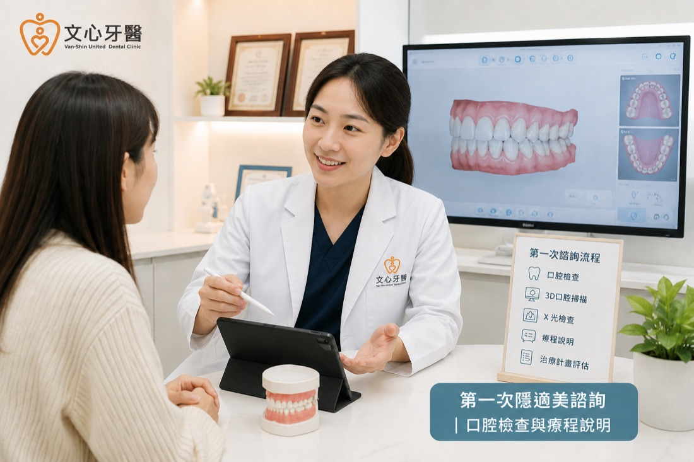
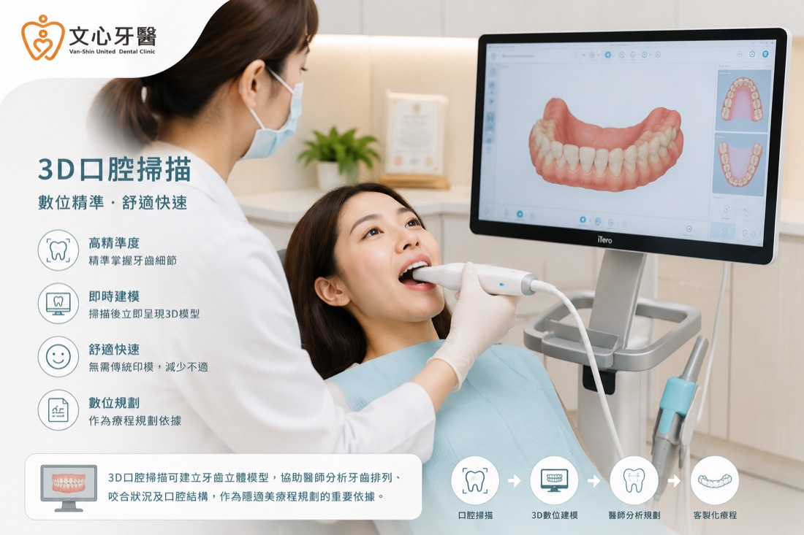
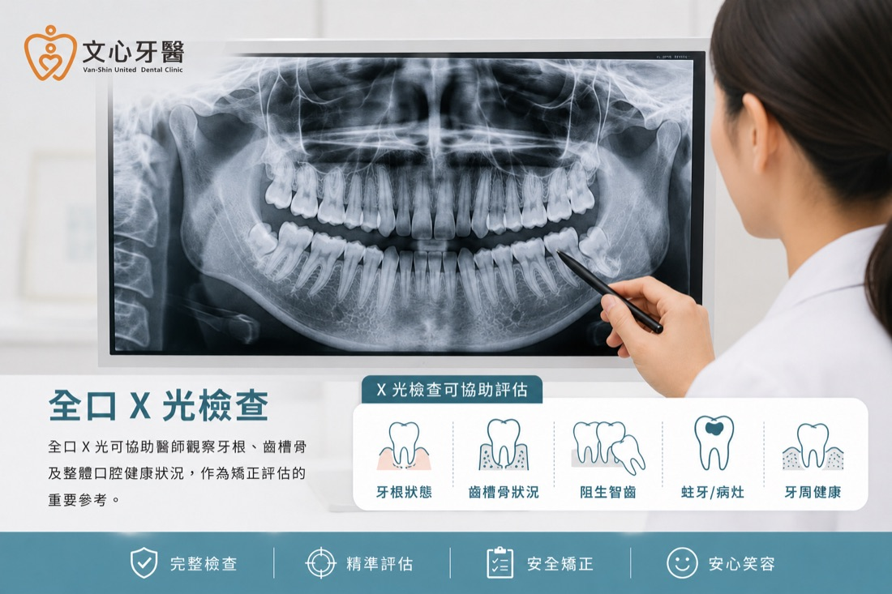
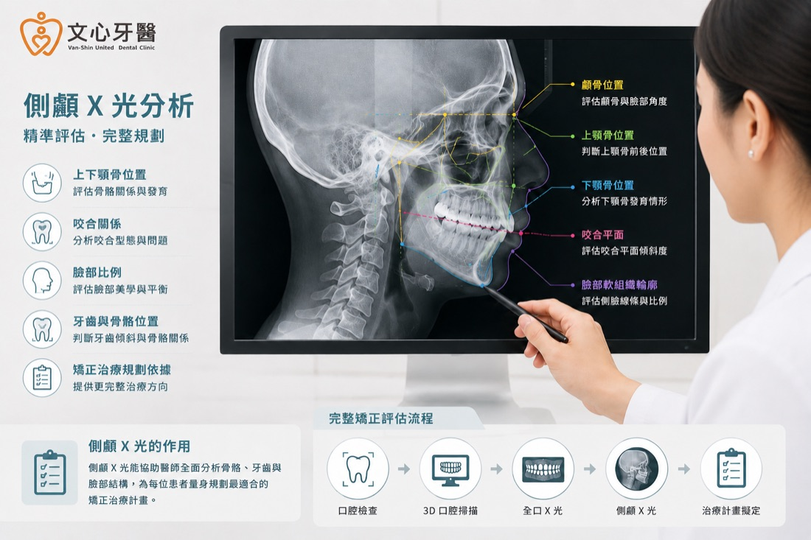
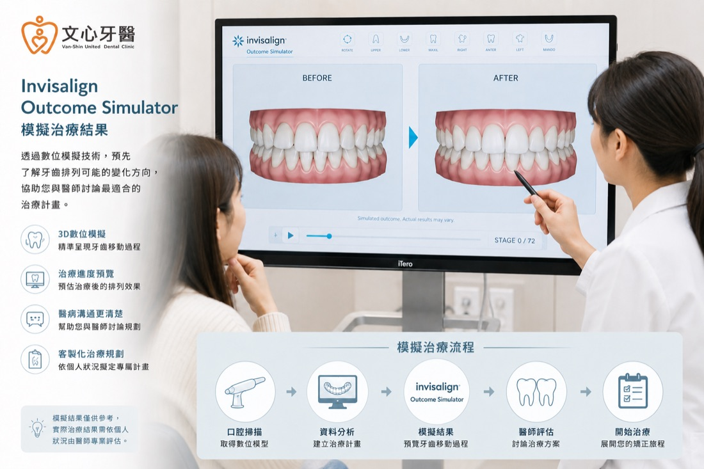

第一次準備諮詢隱適美時，許多人最常問的就是：
第一次看診就會開始戴透明牙套嗎？
- 第一次一定要做 3D 口掃嗎？
- 為什麼不能只看牙齒？
- 為什麼還需要拍 X 光？
- 第一次就能知道自己適不適合隱適美嗎？
- 當天就會知道療程費用嗎？
其實，答案都需要經過完整檢查才能判斷，因為每位患者的牙齒排列、咬合狀況及口腔健康條件都不同，因此第一次看診最重要的目的，並不是立即開始配戴透明牙套，而是透過完整檢查，協助牙醫師了解目前的口腔狀況，再依照每位患者的需求規劃適合的治療方向。
以文心牙醫為例，第一次隱適美諮詢通常會安排矯正醫師口腔檢查、3D口腔掃描、全口X光、側顱X光及完整療程說明。完成相關檢查後，矯正醫師會依據患者狀況說明，並可能使用 Outcome Simulator 作為療程溝通的輔助工具，讓患者在正式開始療程前，更了解自己的牙齒狀況及後續規劃。
如果您正準備第一次諮詢隱適美，希望了解第一次看診會做哪些檢查、需要花多少時間，以及醫師會如何評估，看完本文，您將了解初次諮詢通常會進行哪些檢查、醫師如何評估是否適合隱適美，以及開始療程前需要注意哪些事項。
第一次諮詢隱適美，會直接開始戴透明牙套嗎？
不會。
這也是第一次準備做隱適美時，最多患者誤會的一件事情。
許多人以為第一次到診所諮詢，就會直接開始配戴透明牙套，甚至當天就能開始整個療程。
事實上，大部分患者第一次看診的重點，是建立完整的口腔資料，而不是立即開始製作牙套。
原因很簡單，每位患者的牙齒排列、咬合關係、牙周健康及上下顎骨狀況都不同，如果沒有完整檢查，醫師很難判斷是否適合進行隱適美療程，更無法規劃後續牙齒移動方式。
因此，第一次看診通常會先完成完整評估，再與患者討論適合的治療方向，讓患者充分了解療程內容後，再決定是否進入後續治療。
換句話說，第一次諮詢真正的目的，很多患者以為第一次看診就是療程的開始，其實真正開始的，是了解自己的牙齒。

第一次一定要做3D口掃嗎？為什麼不能只看牙齒？
許多患者第一次接觸隱適美時，都會聽到「3D口掃」這個名詞。
也因此常有人詢問：「一定要做3D口掃嗎？」
答案是，大多數情況下，3D口腔掃描是矯正醫師規劃療程的重要評估工具之一。
因為肉眼只能看到牙齒外觀，卻無法完整記錄每顆牙齒的位置、牙弓形態及咬合關係。
透過數位口腔掃描，可以快速建立牙齒立體模型，不僅能協助矯正醫師更精確分析牙齒排列，也能作為後續療程規劃的重要依據。
與傳統印模相比，3D口掃不需要使用印模材料，掃描速度較快，患者舒適度也相對較高。
此外，完成掃描後，患者也可以直接透過螢幕看到目前牙齒排列情況，更容易理解醫師後續說明。
對於隱適美療程而言，完整的數位資料，也能讓後續治療規劃更加完整，因此在第一次看診時，通常會安排進行3D口腔掃描。

第一次一定要拍全口X光、側顱X光嗎？
第一次諮詢隱適美時，許多患者看到需要拍攝全口X光和側顱X光，第一個反應通常都是：
「不是已經做3D口掃了嗎？為什麼還要拍X光？」
其實，3D口掃與X光扮演的角色完全不同。
3D口腔掃描主要記錄的是牙齒表面的排列狀況，能建立精確的數位牙齒模型，方便醫師分析牙齒排列與咬合情形；但它無法看見牙根位置、齒槽骨狀況及上下顎骨骼關係。
因此，若要規劃完整的隱適美療程，除了牙齒外觀之外，還需要透過X光影像，了解牙齒內部及骨骼結構，才能做出更完整的評估。
全口X光主要看什麼？
全口X光主要用來觀察整體口腔健康狀況，例如：
- 牙根是否健康
- 是否有阻生智齒
- 是否有缺牙或多生牙
- 牙周骨支持情況
- 是否有其他需要先處理的口腔問題
如果在矯正前發現蛀牙、牙周疾病或其他口腔狀況，醫師通常會建議先完成相關治療，再規劃後續矯正療程。

側顱X光又是什麼？
除了牙齒本身，矯正治療還需要評估上下顎骨及臉部比例。
因此，初診評估通常也會拍攝側顱X光（Cephalometric X-ray）。
側顱X光可協助醫師分析：
- 上下顎骨的位置關係
- 咬合型態
- 臉部側面比例
- 牙齒與骨骼的相對位置
- 後續矯正治療方向
例如，有些患者看起來像暴牙，實際原因可能是牙齒排列，也可能與上下顎骨比例有關。透過側顱X光，醫師能獲得更完整的資訊，協助制定適合的治療計畫。

有了3D口掃和X光，就能開始規劃療程嗎？
完成3D口掃、全口X光及側顱X光後，矯正醫師已經擁有完整的口腔資料，但真正重要的是如何整合這些資訊。
文心牙醫會綜合口腔檢查、數位口掃及X光影像，評估患者目前的牙齒排列、咬合狀況及口腔健康，再與患者討論是否適合進行隱適美療程，以及可能的治療方向。
也就是說，每一項檢查都不是單獨存在，而是彼此搭配，幫助醫師做出更完整、更符合個人口腔狀況的治療規劃。
第一次諮詢就能知道自己適不適合隱適美嗎？醫師如何評估？
完成3D口腔掃描、全口X光及側顱X光後，許多患者最期待的問題就是：
「那我適合做隱適美嗎？」
事實上，是否適合隱適美，並不是只看牙齒是否整齊，而是需要綜合多項檢查結果，由牙醫師進行完整評估。
醫師會依據牙齒排列、咬合關係、牙周健康、上下顎骨位置，以及患者希望改善的需求，評估是否適合採用隱適美治療，並規劃可能的治療方向。
因此，初診評估除了建立完整的口腔資料，更重要的是透過醫師專業分析，讓患者了解目前牙齒狀況，以及適合自己的治療方式。
Invisalign Outcome Simulator 是什麼？
完成口腔檢查後，文心牙醫也會透過 Invisalign Outcome Simulator，協助患者更直觀了解牙齒排列可能的變化。
Outcome Simulator 是 Invisalign 提供的數位模擬工具，會依據3D口腔掃描資料，模擬牙齒排列改善的方向，讓患者在正式開始療程前，就能對未來可能的變化有初步概念。
對第一次接觸隱適美的患者來說，相較於單純聽醫師說明，透過模擬畫面更容易理解目前牙齒狀況，以及後續治療規劃。
不過需要提醒的是，Outcome Simulator 屬於初步模擬工具，主要用於醫病溝通與治療說明，並不代表實際治療結果。最終療程規劃仍須由矯正醫師依據完整檢查結果及個人口腔條件進行判斷。

醫師會評估哪些項目？
第一次諮詢時，醫師通常會綜合以下資訊進行評估：
- 牙齒排列是否整齊：了解牙齒擁擠、齒縫或排列不整的程度。
- 咬合關係是否正常：包含深咬、開咬、戽斗或暴牙等情況。
- 牙周健康狀況：確認牙齦及齒槽骨是否健康，是否需要先進行其他治療。
- 上下顎骨位置：透過側顱X光分析骨骼比例，作為治療規劃的重要依據。
- 患者的治療需求：了解患者希望改善哪些問題，例如美觀、咬合或清潔便利性。
透過完整評估，醫師才能依照每位患者不同的口腔條件，規劃適合的矯正方式，而不是套用相同的治療模式。
第一次就會知道療程計畫嗎？
完成所有檢查後，醫師通常會先說明目前牙齒狀況、是否適合進一步規劃隱適美療程，以及初步的治療方向。
如果患者決定進一步接受治療，後續會再依照完整檢查資料進行更詳細的療程規劃，包含牙齒移動設計、預估療程時間及後續安排。
也因為每位患者的牙齒排列及咬合狀況不同，實際療程內容及時間仍需由矯正醫師完成完整評估後說明。
延伸閱讀
如果您也想了解影響療程規劃的重要因素，建議閱讀：
除了了解價格外，也能更清楚知道不同療程規劃可能影響的因素，幫助您在第一次諮詢前做好準備。
第一次諮詢就會知道療程費用嗎？
除了療程流程之外，初診評估時另一個常見問題就是：
「第一次看診就會知道費用嗎？」
一般來說，在完成口腔檢查、3D口腔掃描及X光拍攝後，醫師會根據患者目前的牙齒排列、咬合狀況及治療需求，提供初步的療程建議，並說明相關費用。
由於每位患者的牙齒條件、治療難度及療程規劃不同，因此實際費用仍需由矯正醫師完成完整評估後才能確認。
第一次諮詢需要多久？
第一次隱適美諮詢所需時間，會依照每位患者的口腔狀況及檢查內容有所不同。
如果包含完整的：
- 醫師口腔檢查
- 3D口腔掃描
- 全口X光
- 側顱X光
- 醫師療程說明
- Invisalign Outcome Simulator 模擬
建議預留較充裕的看診時間，讓醫師有足夠時間了解您的需求，並完整說明檢查結果與後續治療方向。
充分的溝通，也有助於患者了解自己的口腔狀況，並與醫師共同討論適合自己的治療方式。
第一次看診需要準備什麼？
第一次預約隱適美，不需要準備特別複雜的資料。
不過，建議事先思考自己最想改善的問題，例如：
- 希望改善牙齒排列不整齊
- 想改善嘴凸或暴牙
- 希望改善咬合問題
- 曾經做過矯正，但牙齒又慢慢跑位
- 想了解自己是否適合隱適美
如果曾接受牙科治療或矯正，也可以於看診時主動告知醫師，讓評估更加完整。
第一次諮詢隱適美，常見5個誤解
第一次準備做隱適美時，網路上常有許多資訊，但並非每個觀念都正確。
以下整理幾個常見的誤解，幫助您在第一次諮詢前有更正確的認識。
誤解一：第一次看診就會開始戴透明牙套
事實：
第一次看診主要是建立完整口腔資料，並由醫師評估是否適合進行隱適美療程，通常不會當天直接開始配戴透明牙套。
誤解二：只要牙齒不整齊，就一定適合隱適美
事實：
是否適合隱適美，需要綜合牙齒排列、咬合關係、牙周健康及上下顎骨位置等因素，由矯正醫師完成完整評估。
誤解三：有做3D口掃，就不用拍X光
事實：
3D口掃主要記錄牙齒外觀排列，而X光則能觀察牙根、齒槽骨及上下顎骨位置，兩者提供的資訊不同，通常會搭配使用。
誤解四：第一次一定會拔牙
事實：
是否需要拔牙，需依照每位患者的牙齒空間、咬合狀況及治療規劃，由矯正醫師評估後說明，並非所有患者都需要拔牙。
誤解五：第一次諮詢後一定要開始療程
事實：
第一次諮詢的重點是了解自己的口腔狀況與治療方向，患者可在充分了解療程內容後，再決定是否安排後續治療。
常見問題（FAQ）
Q1：第一次諮詢可以只了解療程，不立即開始嗎？
可以。第一次諮詢主要是透過完整檢查及醫師說明，協助患者了解自己的牙齒狀況及可能的治療方向，是否安排後續療程，可依個人需求與醫師討論。
Q2：第一次一定要做3D口掃嗎？
文心牙醫第一次隱適美諮詢通常會安排3D口腔掃描，作為療程評估的重要依據，實際檢查內容仍由矯正醫師依個人口腔狀況安排。
Q3：第一次一定要拍X光嗎？
通常會依照醫師評估安排全口X光及側顱X光，以協助分析牙根、齒槽骨及上下顎骨位置，提供更完整的治療評估。
Q4：第一次看診需要空腹嗎？
不需要，保持平常口腔清潔即可。如有其他牙科治療病史，也建議主動告知醫師。
Q5：第一次就能知道自己適不適合隱適美嗎？
完成口腔檢查、3D口掃及X光等檢查後，醫師通常可依照目前口腔條件，說明是否適合進一步規劃隱適美療程。
結語
第一次諮詢隱適美，並不是急著開始配戴透明牙套，而是透過完整檢查，了解牙齒排列、咬合及口腔健康狀況，作為後續治療規劃的重要依據。
如果您正在考慮隱適美療程，建議先由牙醫師完成完整評估，再依照個人口腔條件討論適合的治療方式，讓療程規劃更符合自身需求。